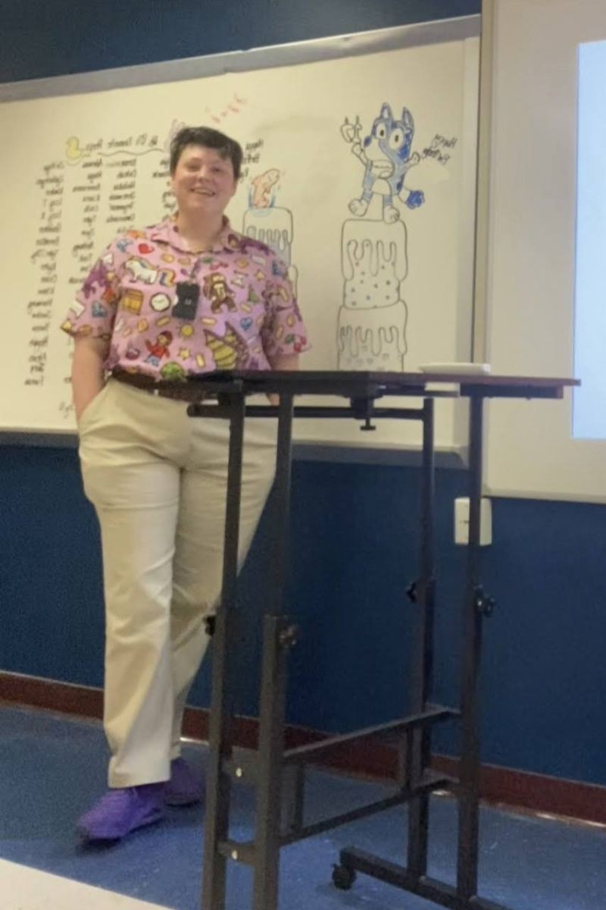
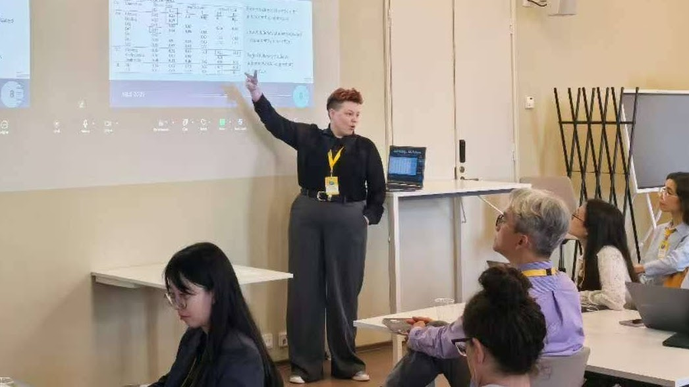

Scholar · Educator · Practitioner
My teaching is grounded in pragmatism and constructivism, and shaped by the belief that students engage more deeply when they understand the value of what they're learning. I focus on making that value visible — and designing the conditions that make meaningful learning possible.
I believe students engage most deeply when they understand the value of what they're learning — not just its academic purpose, but its relevance to their goals, their work, and their lives beyond the course. I approach instructional design the way I approach research: with intentional scaffolding, frequent formative feedback, and a willingness to change how I teach something before I change what I expect of students. I am committed to creating inclusive environments where students' identities and prior experiences are treated as assets, and where the conditions for meaningful learning are built deliberately into the design of the course itself.

AI in Education: Design, Teaching, and Assessment
Discussion-based exploration of generative AI's impact on teaching, learning, and instructional design. Designed and delivered for an internationally diverse cohort of K–12 and higher education practitioners through ODU's Office of International Collaborations.
Graduate · Online Synchronous · International cohort
Introduction to AI in Education
Foundational course in AI literacy, critical evaluation, and project-based application across K–12 and higher education contexts. First offering in a two-semester sequence; positive outcomes informed the design of the subsequent course.
Graduate · Online Synchronous · International cohort
Learning to Learn
Undergraduate course in academic self-regulation, study strategies, and metacognitive skill development. Emphasized evidence-based practices and active-learning strategies across two semesters of iterative course improvement.
Undergraduate · In-person
CTE Business Education
Secondary business education courses emphasizing career readiness, technology integration, and real-world application of business concepts. Virginia-licensed in Business Education and Marketing Education.
Secondary · CTE
Guest Lecturer
IDT 860: Cognition and Instructional Design
Old Dominion University · Spring 2026
Guest Lecturer
IDT 837: Consulting Skills for Instructional Designers
Old Dominion University · Spring 2025
The following reflects themes from student feedback collected across courses. Responses are paraphrased and de-identified to protect student privacy.
"Students who showed up and communicated found that their effort was seen and acknowledged — something that made a real difference in a course that moves at a steady pace."
Learning to Learn · undergraduate student · paraphrased
"The structure of lecture followed by discussion gave space to absorb ideas and then actually practice them — and having the instructor available throughout the project made a complex topic feel manageable."
AI in Education · international cohort · paraphrased
Recurring themes across courses